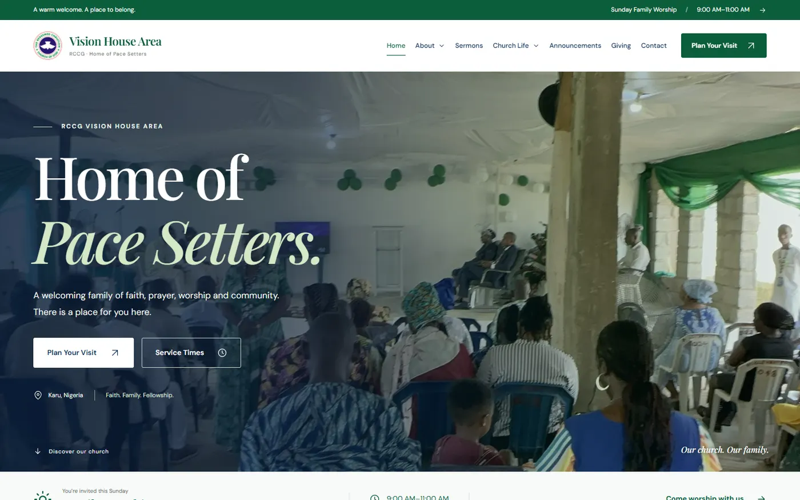
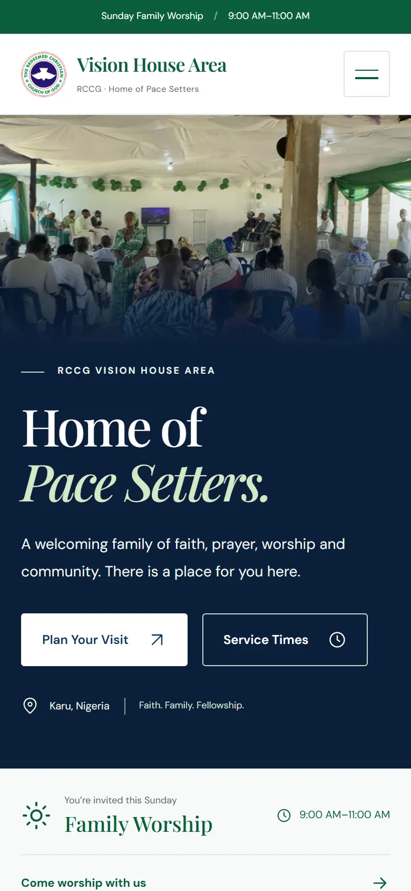

01
Live
RCCG Vision House
A warm, content-rich website for RCCG Vision House Area in Karu, Nigeria. It helps first-time visitors plan their visit and keeps members connected with sermons, programmes and church life.
- Type
- Church & community website
- Includes
- Service times, weekly programmes, sermons, announcements, giving & a plan-your-visit journey
- Built with
- HTML, CSS, JavaScript